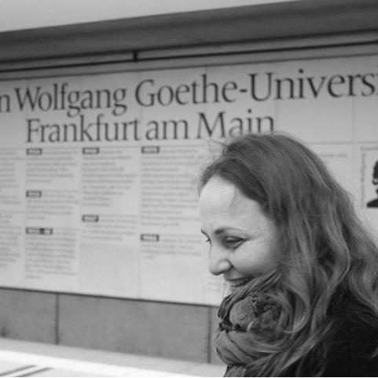

Luana Licata |
|

Luana Licata acquired her competencies in over 15 years of professional involvement in various aspects of applied life sciences. She has a Master's Degree in Biology and obtained her Ph.D. in biochemistry and structural biology at the Max-Planck-Institute of Biophysics in Frankfurt am Main in 2004. Since 2006, she has been working as researcher and biocurator in the Bioinformatics and Computational Biology Unit of the Molecular Genetics Laboratory led by prof. Gianni Cesareni at the Tor Vergata University of Rome, Italy. Her main research activity as MINT Database curator (Molecular INTeraction database) includes the curation of molecular biology and molecular medicine papers with specific focus on biological pathways and protein interactions, and the integration and validation of heterogeneous biological data. More recently she has been involved in the coordination and curation of VirusMentha, which integrates data from the major databases and the SIGNOR resource for signalling information.
|